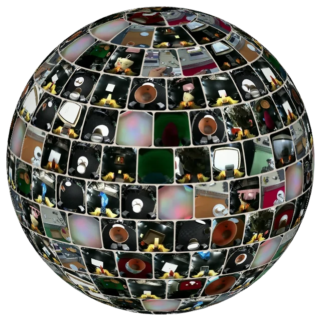

Drag to rotate
GenUMI
Insta360-based handheld Universal Manipulation Interface (UMI) hardware with versions matched to the Flexiv Grav (GN-01) and Robotiq 2F-85 grippers.
A third-year Ph.D. student at Shanghai Jiao Tong University, focusing on multi-modal learning (previously) and robotics.
Email: hong_li@sjtu.edu.cn
Insta360-based handheld Universal Manipulation Interface (UMI) hardware with versions matched to the Flexiv Grav (GN-01) and Robotiq 2F-85 grippers.

A compact vision-based tactile sensor with a detachable optical stack, interactive 3D assembly, and downloadable CAD.

Touch3D pairs GelSight Mini contact images with RGB, depth, and 3D geometry of everyday objects.

Sample imagery by Hong Li et al., cropped and resized under CC BY 4.0.